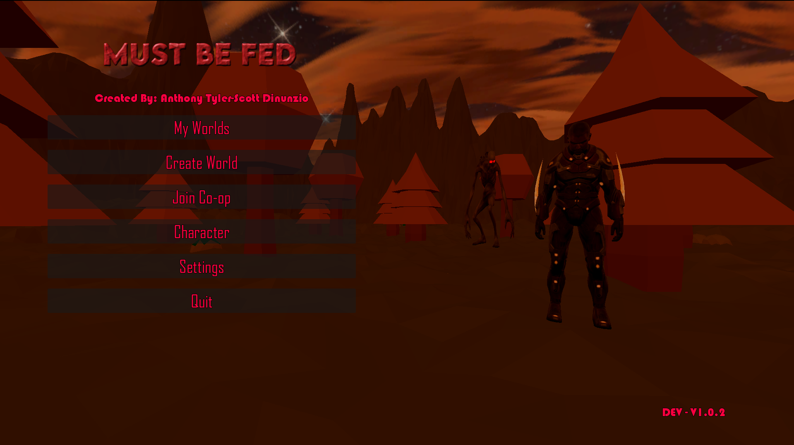
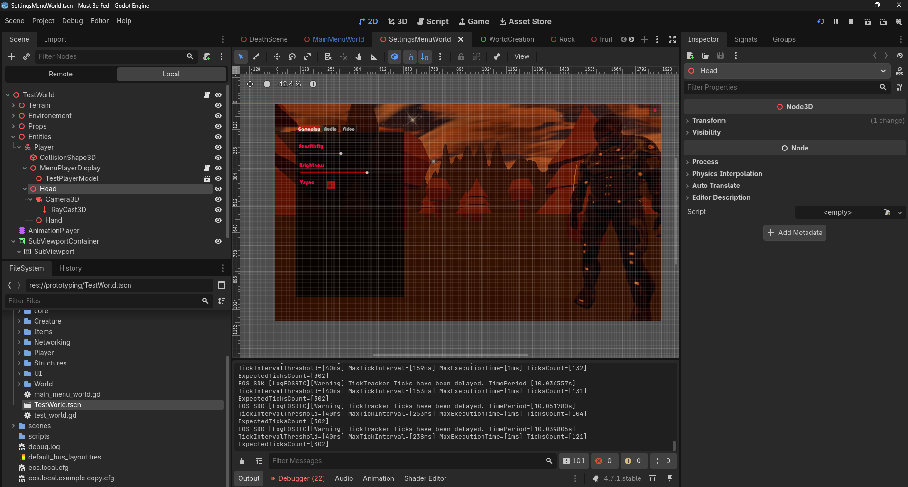

01
Survival
Manage hunger and health while finding food and maintaining access to essential resources.
DinunzioDotDev Original
Enter an unfamiliar world where survival is never guaranteed. Gather resources, establish shelters, explore dangerous environments, and work alongside other players as you uncover the mysteries of an ecosystem driven by hunger.
About the Game
Must Be Fed is an open-world multiplayer survival horror game that challenges players to survive within an unfamiliar and dangerous ecosystem.
Players gather natural resources, collect food, construct shelters, and establish settlements while navigating an environment inhabited by hostile creatures.
Survival requires preparation, awareness, and cooperation. Players cannot simply eliminate every threat they encounter. Instead, they must learn to survive through environmental awareness, defensive tools, and strategic decision-making.
Core Gameplay
Core features are being developed and refined. Only finalized or genuinely planned systems are represented here.
Manage hunger and health while finding food and maintaining access to essential resources.
Explore an open world, discover new locations, and uncover the mysteries of an unfamiliar ecosystem.
Harvest trees, collect natural materials, and gather resources for survival and construction.
Build shelters, barriers, storage facilities, and structures that support growing settlements.
Explore, build, gather resources, and survive alongside other players.
Avoid, distract, or temporarily incapacitate dangerous creatures instead of simply eliminating them.
Discover materials and information that contribute to research, technological development, and long-term progression.
Gameplay Philosophy
Must Be Fed is built around the idea that survival is an ongoing challenge. The world is not simply a collection of enemies waiting to be defeated. Its inhabitants are part of an ecosystem, and players must learn how to coexist with, avoid, and defend themselves against the threats around them.
Development Status
Must Be Fed is currently in active development by DinunzioDotDev. Gameplay systems, environments, multiplayer functionality, and progression mechanics are being developed and refined. Release timing and final feature scope have not been announced.
Media
Approved gameplay images and footage will be displayed here when available.


